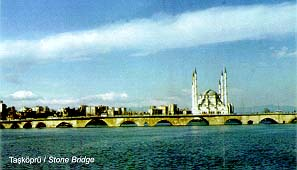
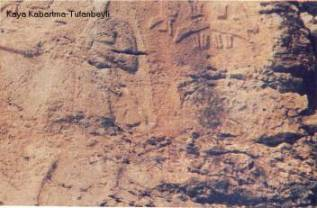

Haberler
Spor
 Galatasaray Başkanı Dursun Özbek'ten sürpriz bir hamle geldi. Kulüpler Birliği'nin başkanlığına soyunan Özbek, kulüpler arası atışmaları doğru bulmadığını ve bu konunun daha uygun şekillerde çözümlenmesi gerektiğini masaya yatırdı.
Galatasaray Başkanı Dursun Özbek'ten sürpriz bir hamle geldi. Kulüpler Birliği'nin başkanlığına soyunan Özbek, kulüpler arası atışmaları doğru bulmadığını ve bu konunun daha uygun şekillerde çözümlenmesi gerektiğini masaya yatırdı.
Gündem
Adana'da PKK/ KCK terör örgütü adına eylem yapıp, güvenlik güçlerine molotof kokteyli atan 5 kişi tutuklandı. Terörle Mücadele Şubesi ekipleri, 9 Ocak'ta merkez Yüreğir İlçesi'nin Anadolu, Dede Korkut ve 19 Mayıs Mahallesi ile ara sokaklarında toplanıp, korsan gösteri düzenleyen PKK/KCK yandaşlarına müdahale etti.
Son Dakika
Sultanahmet Meydanı'nda saat 10.20'de çok şiddetli bir patlama meydana geldi. Olay yerine ambulans, polis ve itfaiye araçları sevk edildi. Bölgede olağanüstü güvenlik önlemleri alındı, tramvay seferleri durdu.
ESKİ ÇAĞLARDA ADANA
 Tarihi araştırmalardan elde edilen bilgilere göre, Çukurova, Yontma taş Devrinden bu yana yerleşim yeri olmuştur. Çukurova'nın en eski yerleşim merkezlerinden biri Tepebağ Höyüğü ilk çağlardan kalmadır. Höyükte rastlanan surlarla çevrili kent çekirdeği burada Neolitik çağda yaşayan kent dönemine ışık tutmaktadır.
Tepebağ'ın güneyinde Taş Köprü'nün bitişğinde eski kale yıktırılarak yerine Adana Kalesi yaptırılmıştır. Bu kaleyi daha sonra Mehmet Ali Paşa yıktırmıştır. 1553'te başlayan Ramazanoğulları devrinde, kent oldukça büyümüş bu dönemde Ulucami Tuzzhanı, Yağ Camii gibi eserler yapılmıştır. Adana, Yavuz Sultan Selim'in Mısır seferinden Osmanlılar'a bağlanmış, 1608'de eyalet olmuştur. Sırasıyla Konya, Malatya, Şam, Halep eyaletlerine bağlı kalmıştır. Bir ara Kıbrıs'tan da idare edilmiş, 1867'de vilayet bundan sonra da Adana Sancaği'nın merkez ilçesi olmuştur. Bu durum Fransız işgaline kadar sürmüştür. İşgal sırasında vilayet merkezi Pozantıya nakledilmiş, işgal sona erince Adana yeniden vilayet merkezi olmuştur. Cumhuriyet, devrinde çok gelişmiştir.
ESKİ ÇAĞLARDA ADANA BÖLGESİNİ EGEMENLİKLERİ ALTINDA BULUNDURAN GURUPLAR
 Luvi Krallığı (M.Ö.1900) , Arzava Krallığı (M.Ö. 1500-1333) , Hitit Krallığı (M.Ö. 1900-1200), Kue Krallığı (M.Ö.1190-713), Asur Krallığı (M.Ö. 713-663) , Pers Satraplığı (M.Ö.612-333), Helenistik Dönem (M.Ö. 333-323) Selökidler (M.Ö. 312-133), Korsanlar Dönemi (M.Ö. 178-112), Romalılar (M.Ö.112-M.S. 395)
ORTA ÇAĞDA ADANA BÖLGESİNİ EGEMENLİKLERİ ALTINDA BULUNDURAN GRUPLAR
Bizanslılar (M.S. 395-638), İslam Devri, Selçuklular, Ermeni Krallığı
Mısır Türk Memlukları, Ramazanoğulları, Osmanlılar.